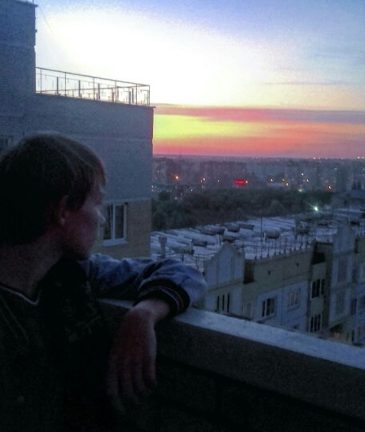

Даня приятный молодой паренек. Играет в футбол, учит химию (удивительно!), потому что хочет работать зубным техником.
Вкусы Дани
Даня типичный эмо-бой: носил длинные волосы, иногда называли джастином бибером, слушает суицайд бойзов. Он хорошо разбирается в моде - покупает стильные вещи. Любит макароны с тушёнкой. Он очень добрый.
Повседневные вещи Данилы
Данил гуляет, подписан на паблик создателя сайта. Данил проходил много лет на футбол.Он отличный вратарь и хороший футболист. Носит аирмаксы 90-e. Когда Даня играет в контр-страй, он заходит на даст 2 и чекает суицайд).
Если вы не видели фотографий с Данилой, то вы сможете увидеть их на этом сайте.
Даня занимается рэпом и сделал фит с ethereal boy, со своим продюссерем, и с самим Алексеем (giveyoumoon)
Особенность Данила
Данил очень хороший парень. Он трушный (так называют истинных фанатов) суицайд - постоянно молчит, одевается как эмо-бой, поговорит, когда надо. Поэтому получилось так, что ты с ним не заскучаешь и он тебе не надоест лишними разговорами. Он всегда идет гулять.
Что еще можно найти на сайте Данила?
Подробно изучите шапку сайта, потому что там все podrobno написан.